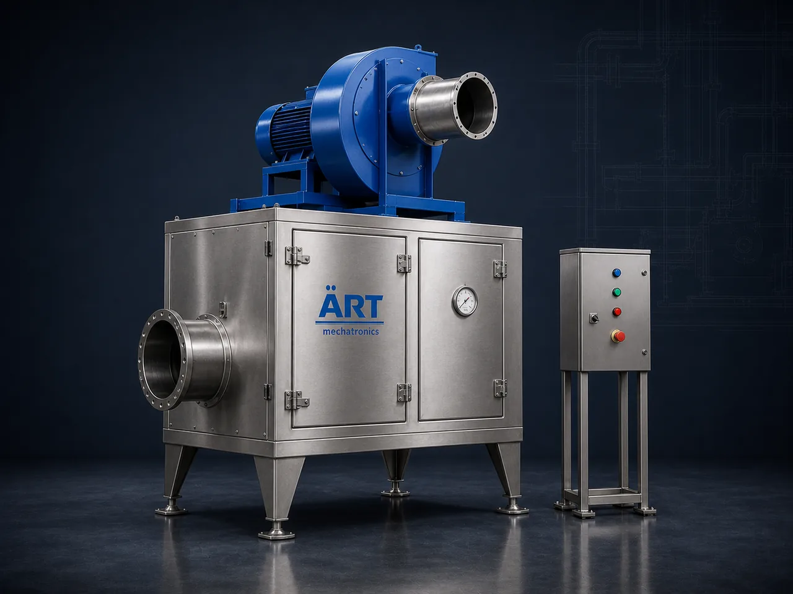

Industrial Air Filter Unit (Air Filtration System for Process & Plant Air)
An Industrial Air Filter is a filtration unit that cleans the air moving through a plant, whether that is supply air, process air or extracted air, by passing it through filter media held in a sealed housing.

About the Air Filter
Air filters are used both as stand-alone housings in a duct run and as filtration stages inside larger extraction, ventilation and pollution control systems. ART Mechatronics builds air filter units and filter housings to suit the duct layout, the media type chosen for the duty, and the access needed for routine media changes.
One machine, many names
Buyers search for this equipment under many terms — we manufacture all of them:
Working Principle of Air Filter
Dust-laden or untreated air enters the unit through:
Coarse dust and lint are held back first by:
Protects the finer filter stage behind it
Finer particles are captured as air passes through:
Media is selected to suit the air being handled
Where the duty calls for it, a further stage is added:
Optional stage for odour and vapour control
Filtered air is delivered onward through:
Loaded media is inspected and changed through:
Housing is designed around routine media replacement
Types of Air Filters
Industries Using Air Filters
🍃 Food & Agro Processing
- Clean air for dryers and packing halls
- Spice, flour and snack plants
💊 Pharmaceutical & Nutraceutical
- Clean process air
- Powder handling areas
⚗️ Chemical & Industrial
- Process air supply
- Fume and vapour extraction lines
🏭 Metal & Engineering
- Workshop ventilation
- Machining and finishing areas
🏗️ Cement, Minerals & Construction Materials
- Dusty material handling areas
♻️ Plastic & Recycling
- Granule and powder handling lines
Features & Advantages
- Cleaner plant, process and workspace air
- Protects downstream equipment and product
- Media type chosen to suit the duty
- Sealed housing construction
- Access doors for quick media changes
- Fits into new or existing duct runs
- Sizes and layouts built to order
Technical Highlights
- Air Volume: Custom engineered to the application
- Filter Stages: Single or multi-stage arrangement
- Media Options: Panel, pocket, cartridge or activated carbon
- Construction: Mild steel or stainless steel construction options
- Mounting: Inline duct, floor-mounted or unit-integrated
- Monitoring: Filter condition indication (optional)
Turnkey Air Filtration Solutions
ART Mechatronics offers:
- Air filtration study and unit selection
- Housing and duct layout design
- Equipment manufacturing
- Installation & commissioning
- Replacement media supply
- After-sales service & AMC
Why Choose ART Mechatronics
- Air filtration built around your duct layout
- Media selection matched to the air being handled
- Sealed and serviceable housing design
- Integrates with ART dust extraction and ventilation systems
- Support for replacement media and servicing
Applications
- Food Processing Units
- Pharmaceutical Manufacturing Units
- Chemical & Industrial Plants
- Engineering & Metal Workshops
- Plastic & Recycling Plants
- Plant Ventilation & Air Handling Systems
Get pricing & specs for the Air Filter
Share the product, target capacity, current process and plant location. These details help our engineers discuss the right machine or line configuration.
One partner, from design to start-up
ART Mechatronics designs, manufactures, installs and commissions your Air Filter solution with regional presence in India, UAE and Thailand.